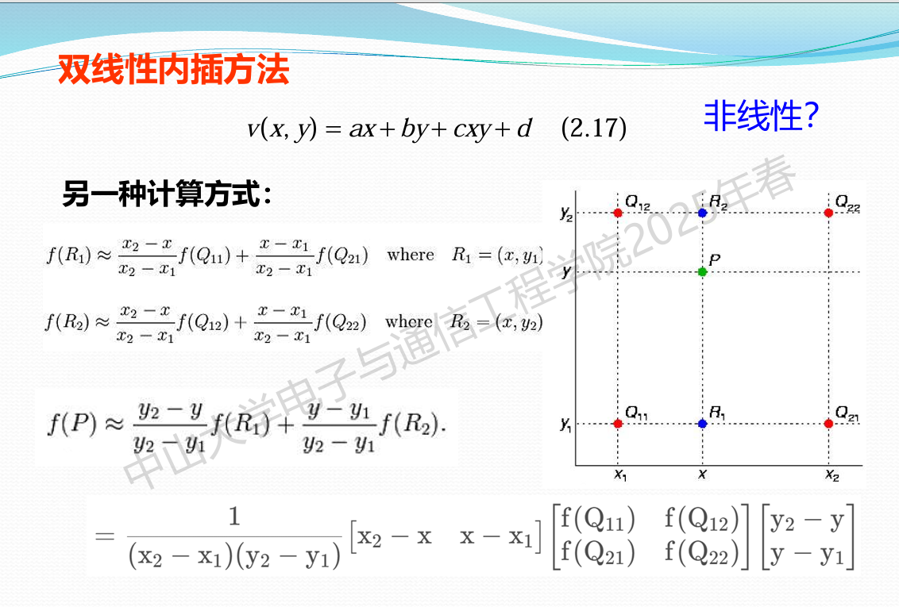
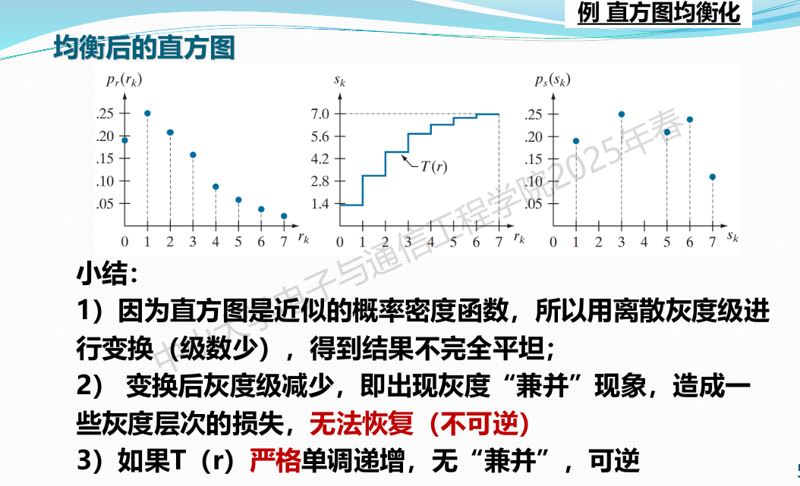

由于之前的课程笔记利用率太低了，于是这里准备整合成一个了。
ECE371 Neural Networks and Deep Learning
w1+w2 两周还没讲完绪论，悲。绪论目前没什么要重点掌握的知识。
Lecture 1 Course Introduction
1.1 History of artificial intelligence
主要讲AI的历史。
1.2 Introduction to machine learning
机器学习的目标：从训练数据中找到一个映射函数（mapping function），映射到一个东西（一个分类，一个向量，或者其他）
分类、聚类、回归、降维
应用略
分类模型：
一些feature：
- Histogram of Oriented Gradients (HOG)，cv，方向梯度直方图，
- Scale-invariant Feature Transform (SIFT)，cv，尺度不变特征转换
- Set of Words (SoW)，nlp，词集模型
- Bag of Words (BoW)，nlp，词袋模型
Model capacity：
大概指模型能够拟合的函数的能力？比如线性模型只能拟合线性函数，二次型模型能拟合二次函数+线性函数，还有更复杂的模型。
但到了深度学习，三层mlp就能拟合任意连续函数，所以说对这方面就可能不是太看重了吧。
Underfitting：
- 模型能力不足（深度学习就是不够大）
- 优化方法、优化函数有问题，或者容易收敛到局部最小值
- 计算资源不够
深度学习方面主要问题是第二点。
Overfitting：
- 模型能拟合的函数过多，以至于找到另一个足以能拟合训练数据的函数，这个函数和“真实”函数区别很大。
- 训练数据不够
- 可以用与training、testing data不一样的validation集来验证是不是过拟合
- 由于训练数据有噪声，模型可能把噪声也给拟合了
过拟合是深度学习这边比较常见的问题。
传统机器学习的训练流程：
略
1.3 Introduction to deep learning
神经网络重新火起来：
Hinton et al., “A Fast Learning Algorithm for Deep Belief Nets,” Neural Computation, 2006
具体示例就略了。
1.4 Review of Linear Regression
线性回归：输入特征数据+线性模型，输出要预测的值、向量。
优化目标：MSE函数。
ordinary least squares：（普通）最小二乘法，可以用于求简单的线性回归问题的解
也可以用梯度下降法来进行优化：
batch gradient descent：批量梯度下降，相对于SGD被称为确定性梯度下降。批量指每次训练时使用所有样本来进行训练。
Stochastic gradient descent: 随机梯度下降，在样本中抽一个进行梯度下降

sequentially：先生成一个随机/伪随机序列，再按照这个序列来顺序拿样本训练，相比randomly的好处就是预处理+防止重复。或许可以把QMC那边的低差异序列拿过来。
Mini-batch gradient descent：小批量，随机抽几个样本作为一个mini batch来进行训练


1.5 Review of Logistic Classification
Logistic：（本意是后勤上的，安排协调方面的，物流上的），个人理解为概率（存疑）
Logistic Classification：指按照概率来分类，给出每个类别的概率。比如AI觉得这张图片是小狗图片的概率为42%.
所以说为了把，就需要一个函数来做成这件事。
sigmoid function：又称logistic function

性质：
求导简单。
然后建立了二元分类的概率模型。
然后推导梯度下降公式。
softmax function：用于多个class

性质：概率合为1
损失函数（交叉熵）推导看ppt。
图像处理
w1c1 绪论
基本概念：
一幅图像可定义为一个二维函数f（x，y），其中x和y是空间平面坐标， （x，y）处的幅值f（）表示强度。当x，y和灰度值f 是有限的离散数 值时，图像为数字图像。
数字图像是由有限数量的元素组成，每个元素称像素。
模拟图像可用连续函数来描述 其特点：光照位置和光照强度均为连续变化的
数字图像 可用矩阵或数组来描述
- 空间平面坐标到图像强度的映射函数
- 模拟/数字=》连续/离散
图像处理：利用计算机系统对图像信息进行加工处理和分析等，以满足人的视觉需要和实际应用（如压缩编码或机器识别）的要求。
也就是说不仅是简单的“修图”，分析图像也属于图像处理的研究范畴。
三个层次的特征/三个层次的处理：
- 低层处理：对图像处理以改善效果（如 图像=》图像）。就是改变图像的颜色什么的基本特征。
- 中层处理（图像分析）：对图像中感兴趣目标进行检测和测量( 特征提取），得属性特征（如 区域分割 、 边界检测等 ）.。 图像=》特征
- 高层处理（图像理解）：研究图像中各目标的性质和其相互关系， 理解图像的含义（比如图像语义分析）。图像=》语义。
图像处理的流程：

w1c2数字图像基础
2.1
人眼视觉：立体视觉。
- 杆细胞(Rods):暗视觉，7500~15000万，亮度明暗 。分布在两侧，有一个盲区。
- 锥细胞(Cones):明视觉，3种感光细胞，600~700万，颜色和细节，红绿蓝三种视锥细胞。集中在中心凹
亮度适应性：
2.2
没了。
2.3
f为图像的亮度，或者说是图像传感器的接收亮度。
i为太阳光照到物体上的入射光强；r为物体反射到图像传感器的光强。
这块讲得很粗糙，不如隔壁光电感知。
2.4
- 数字化坐标值称为取样/采样。表现为分辨率（M，N），例如（1920x1080）
- 数字化幅度值称为 量化 ，表现为灰度的阶数（L=2^k )
- 图像的 采样率 ：单位距离的采样数目（两个空间方向上）
- 图像大小为sS = M x N x k bit
- 非均匀量化：平滑区域的k较小，复杂区域的k较大，根据灰度值的概率分布来决定k，从而节省空间
- 伪彩色图：用色号+颜色查找表LUT，来表示颜色。一般8bit，用于节省空间。
- 空间分辨率：采样间隔值。
- 灰度级：(L=2^k -1) ,k为比特深度。也有(L=2^k)作为灰度级的？
插值/超分/缩小：
- 缩小图像：行删除，下采样。
- 放大：插值or深度学习超分
- 最近邻域内插方法：上采样，在原图像上寻找最靠近的像素，把它的灰度值赋给新像素。比如把一个4x4的变成8x8，就可以把原来每个像素点变成2x2的像素点。简单粗暴。
- 双线性内插方法：用邻域的四个参考点来计算灰度值。见下。这里ppt讲得很简略。
- 双3次内插方法：插值方程从线性方程换成三次方程。这里讲得更简略了。
- 深度学习：略。

w2c1 数字图像基础

2.5
4领域、对角领域（D领域）、8领域。
邻接：位置相邻+灰度值相近（灰度值相近准则，认为若点p和点q灰度值均属于V，则可说明p、q灰度值相近）
4、8邻接：灰度值相近+是4领域or8领域。
m邻接：对角的两点如果能用4连接相连就不建立对角连接；不能则建立。（作用为避免8连接造成的多条通路）
4邻接m邻接 8邻接
通路、闭合通路。
连通性：S为某个图像自集，对任意,如果在S中存在从p到q的通路，则称p在S中与q连通。
连通分为4连通和8连通。
连通分量：对于, 连通分量为S中连通到p的像素点的集合。连通分量中任意两点连通。
连通集：如果S只有一个连通分量，说明整个S上任意两点之间连通，那么S叫连通集。
区域：S是连通集，那么称S为一个区域
邻接区域：如果两个区域可以合并为一个连通集，则称这两个区域为邻接区域。
连通性相关定义必须指明灰度相近集V+连通类型
连通集只看4连通。

距离、度量：正定对称三角不等式。
欧氏距离、D4（长+宽）、D8（max（长，宽）），均与x连接无关。
D8<=欧式<=D4
Dm距离：m连接下两点之间最短的通路的长度。
2.6
线性运算：加减乘除
加法：降噪，去除叠加性噪声；图像叠加
减法：对象提取、背景提取、差分算梯度
乘法：掩码提取，频域乘法（空间域卷积）
归一化：
与或非逻辑运算
空间操作：单像素变化、领域操作、几何空间变换（仿射变换与插值）
向量和矩阵运算
概率方法：把灰度值看成随机变量，频率=》概率。
w2c2 灰度变换与空间滤波

3.1
图像增强：提取信息、改善主观视觉效果、改善某个指标。
空间增强：输入点（x，y）及其领域，输出点（x，y）
邻域和预定义的操作一起称为 空间滤波器 （掩模、核、模板）？
3.2
灰度变换：改变灰度。

反转：增强图像暗色区域中的白色或灰色细节，特别是当黑色面积占主导地位时.
对数：可以把灰度分布比较窄的转换为比较宽的，用于扩展暗像素
幂次（伽马变换）：γ>1变暗（右下），γ<1变亮（左上）。
分段线性变换函数：突出某些细节。包括对比拉伸、灰度切割（改变特定灰度值范围的像素点）、位图切割（舍弃末位）
3.3
直方图处理：当直方图均匀分布时，图像最清晰。
直方图均衡化：
一目了然。
实际上它想干的事就是拉伸，把最小的对应到0，把最大的对应到1，然后按照累积概率和灰度级数量来重新赋值，使得新的灰度值分布相对均衡。

直方图匹配：把直方图变成指定形状的（比如高斯分布）
原来的分布r =》均衡化 s=T®
期望的分布z =》均衡化 v=G（z）
然后令s=v，则

局部直方图处理: 对局部进行处理、领域变换。计算局部的直方图然后设计变换。
w3c1 空间滤波

计算机网络
w1引言
感觉有点太多了，直接看ppt吧（
1.2
网络分类：个域网PAN，局域网LAN，城域网MAN，广域网WAN
网络核心：分组交换设备（路由器、交换机）+通信链路（光纤电缆等）
网络边缘：端系统=host主机
接入网：把host接入边缘路由器，包括有线无线。
光纤到户FTTH
数字用户线DSL，电话线拨号上网。国内几乎没了。
同轴电缆cable：有线电视信号线上网。
混合光纤同轴电缆HFC：同轴电缆=》光纤=》头端
无线：WLAN（WIFI）和蜂窝网络（流量）
物理介质：
传输单位bit
光纤、双绞线、同轴电缆、无线电
网络核心：路由（全局性，确定整个网络上的路径）+转发（本地操作，把数据转发到某个端口）
电路交换：拉一条专用的电路进行通信。面向连接方式。
报文交换：路由器存储完整的数据报文之后再发送到下一跳。
分组交换：把报文拆成多个小分组，发送分组。统计多路复用。时延和灵活性更好。


1.3
有点乱七八糟，直接看ppt吧。
1.4
1.5
速率：比特率bps
带宽，网络带宽：数字信道能传输的最高比特率。网络瓶颈带宽：短板效应。
吞吐量：单位时间内通过某个网络的数据量，实际测量值。
时延：发送、处理、传播、排队，合起来为总时延。
- 发送：又叫传输时延，主机路由器将分组发送出去的时间。=分组大小/发送速率
- 传播：电磁波在信道中传播所需时间。=传输距离/电磁波速率（接近光速）
- 处理：交换节点为了处理数据所花费的时间。
- 排队：节点缓存队列中排队所花的时间，取决于实时的通信情况。
往返时延RTT：发送到接收回波总时间
时延带宽积=传播时延x带宽
丢包率
时延抖动
利用率
w2应用层
1.6~1.8略
雷达原理
带一至今为止最恐怖的课程，成绩为15+25+60，期中期末两次考试占比高达85%。
【万字长文】雷达基础知识（第二部分） - 知乎
1 绪论

雷达Radar 全称： Radio Detection and Ranging，无线电探测和测距。
IEEE定义：雷达是对目标进行探测与定位的电磁设备。
系统：
脉冲雷达：
测距：发送到接收回波之间的时间 x 光速 / 2。 脉冲越窄性能越好。
测角： 利用天线方向性。
天线上下转动，回波信号最强时的波束角度即为仰角；左右测方位角；这俩都是扇形波束。
同时测：笔形波束。长宽都很窄的一个波束。
测相对速度：
径向：多普勒频移。 测得频移 即可获得相对径向速度
2 发射机
雷达频段划分：
记右边这四个波段！
雷达分类略。